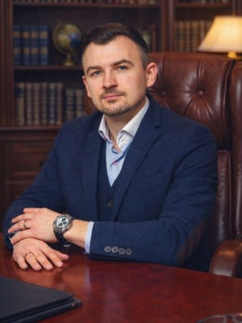
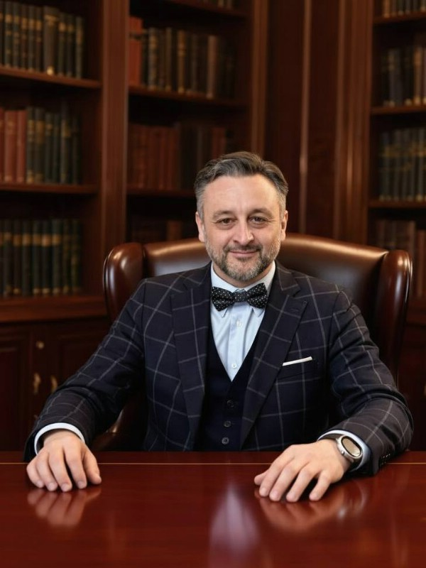

Дети / Выезд за пределы РФ
Выезд ребёнка ограничен конкретными периодами
Суд разрешил выезд только в определённые периоды и для посещения учебных и развивающих мероприятий.
Коллегия адвокатов Москвы / Семейная практика
Когда личное становится юридическим.
Развод, дети, алименты, имущество и брачные договоры. Помогаем отделить эмоции от правовых задач и выстроить последовательную позицию.

Адвокат по семейным спорам
Дмитрий СимоновРеестр № 77/12253
01 / Когда нужна помощь
Начните с ситуации, которая требует решения. Юридическую конструкцию определит адвокат.
Обсудим, какие вопросы можно урегулировать соглашением, а какие потребуют обращения в суд.
Обсудить ситуациюОпределим состав общего имущества, документы по нему и требования, которые необходимо заявить.
Обсудить ситуациюВопросы места жительства ребёнка, порядка общения и устранения препятствий в общении.
Обсудить ситуациюПодготовка требования о взыскании алиментов или задолженности, обсуждение способа и размера взыскания.
Обсудить ситуациюРазберём основания, доказательства и порядок рассмотрения дела в суде.
Обсудить ситуациюПомощь по вопросам ограничения или лишения родительских прав с учётом обстоятельств семьи.
Обсудить ситуациюСудебное заседание уже назначено?
Позвонить адвокату02 / Работа по делу
Семейный спор редко ограничивается одним вопросом. Важно понять, как требования об имуществе, детях и алиментах связаны между собой.
Обсудить вашу ситуациюФиксируем участников, предмет спора, договорённости и уже совершённые юридические действия.
Определяем доказательства по имуществу, доходам, месту жительства и интересам детей.
Готовим соглашение, претензию или позицию для переговоров, если договориться возможно.
Готовим процессуальные документы, участвуем в заседаниях и работаем с судебным решением.
03 / Из практики коллегии
Обезличенные дела, опубликованные коллегией. Каждый исход связан с конкретными обстоятельствами.
Дети / Выезд за пределы РФ
Суд разрешил выезд только в определённые периоды и для посещения учебных и развивающих мероприятий.
Дети / Место жительства
Ребёнок остался проживать с матерью; для второго родителя установлен порядок общения с учётом интересов ребёнка.
Имущество / Ипотека
Суд произвёл раздел квартиры в ипотеке и взыскал расходы на содержание общего имущества.
04 / Адвокаты практики
Три адвоката, указанные на действующей странице семейной практики коллегии.
Семейные и страховые споры

Председатель коллегии
Семейные и жилищные дела
05 / Стоимость помощи
Ориентиры из общего прайса коллегии. Точная сумма зависит от требований и сложности спора.
Перечень носит рекомендательный характер и не является публичной офертой. Объём работы и стоимость закрепляются в соглашении.
Все цены06 / Перед обращением
Короткие ориентиры перед консультацией по семейному спору.
Часть вопросов можно закрепить соглашением: например, алименты, порядок общения или раздел имущества. Возможность договориться зависит от обстоятельств и позиции сторон.
Подойдут документы о браке и детях, сведения об имуществе и доходах, переписка, соглашения и уже полученные судебные документы.
В ряде случаев адвокат может представлять интересы по доверенности. Необходимость личного участия зависит от предмета спора и требований суда.
Связанные требования иногда рассматриваются вместе, но в отдельных случаях их целесообразно разделить. Это определяется после анализа ситуации.
07 / Связанные вопросы
Отдельные направления семейной практики на текущем сайте коллегии.